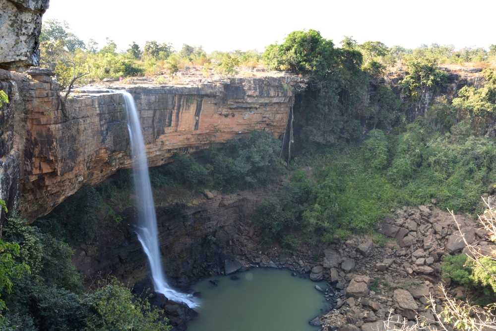
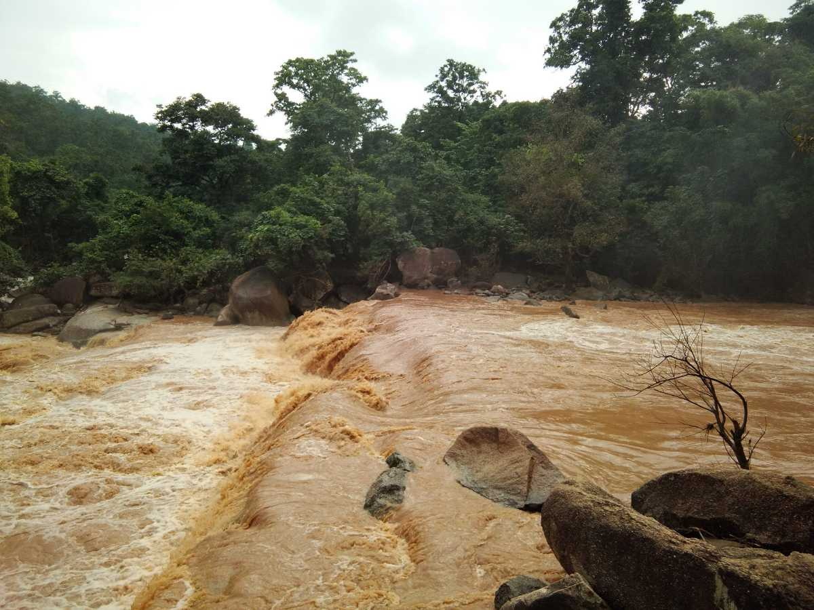
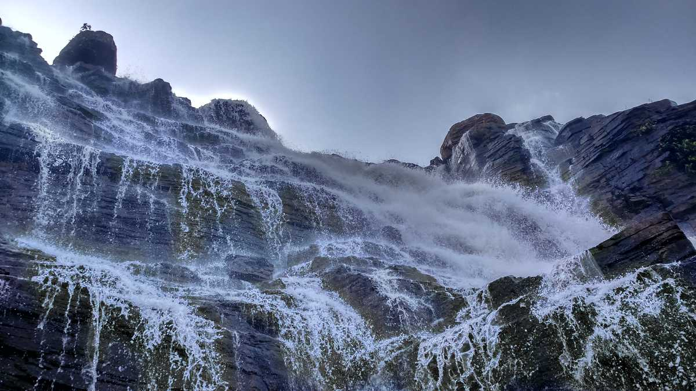

Tirathgarh Falls is undoubtedly one of the most frequented tourist spots in Chhattisgarh. This mesmerizing waterfall cascades down in a series of steps, creating a stunning visual spectacle that captivates visitors.
Bane Waterfalls, located just 25 kilometers away from Kunkuri in Chhattisgarh, is a hidden gem waiting to be explored. Nestled amidst the lush greenery, this waterfall offers a serene and tranquil environment that captivates visitors.
‘Dev’ literally means god and ‘Pahari’ means mountains so this milky white waterfall signifies water flowing from the mountain gods. Dev Pahari waterfall is a massive one and is a great spot for a day out with your family and friends.
Dudh Dhara waterfall originates from river Narmada and is located a kilometre further from Kapil Dhara waterfall. The journey from Kapil Dhara to dudh dhara is not very easy as you will have to pass through thick and dense forest area.
This waterfall is located near Gulu Village, 25kms away from Jashpur Nagar and is a good spot to chill with your family and friends. It originates from the Eb river,Bane,Alori,Orkela and Patiya villages,located not too far from Gulu village.
Malanjhkudum Falls, located on the Doodh River, is another popular tourist spot in Chhattisgarh. This magnificent waterfall is composed of three distinct falls, with heights of 9 meters, 10 meters, and 15 meters.
Located in the Jashpur district of Chhattisgarh, Rajpuri Waterfall is one of the most beautiful waterfalls in Chhattisgarh. It is a very famous picnic spot where you can also try trekking, hiking and fishing near the serenic falls.
Tamra Ghoomar Falls, located near Chitrakote, is another breathtakingly beautiful natural waterfall in Chhattisgarh. The misty white showers cascading down the rocks create an otherworldly experience.